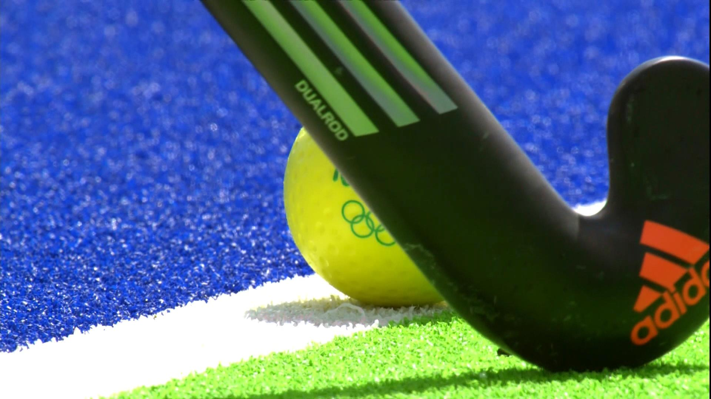

Cricket is a bat-and-ball sport played between two teams of eleven players each on a circular field. Originating in England, it has become one of the world's most popular sports, particularly in countries like India, Australia, England, and South Africa. The game is played with a bat and ball, where one team bats while the other bowls and fields. The batting team scores runs by hitting the ball and running between two sets of wickets, while the bowling team tries to dismiss the batsmen through various means, such as catching the ball, hitting the wickets, or trapping the batsman in front of the wicket. Cricket matches can last for a few hours to several days, with different formats like Test cricket, One Day Internationals (ODIs), and Twenty20 (T20) cricket offering varying durations and styles of play.
Football
Cricket is a bat-and-ball sport played between two teams of eleven players each on a circular field. Originating in England, it has become one of the world's most popular sports, particularly in countries like India, Australia, England, and South Africa. The game is played with a bat and ball, where one team bats while the other bowls and fields. The batting team scores runs by hitting the ball and running between two sets of wickets, while the bowling team tries to dismiss the batsmen through various means, such as catching the ball, hitting the wickets, or trapping the batsman in front of the wicket. Cricket matches can last for a few hours to several days, with different formats like Test cricket, One Day Internationals (ODIs), and Twenty20 (T20) cricket offering varying durations and styles of play.
Volleyball
Cricket is a bat-and-ball sport played between two teams of eleven players each on a circular field. Originating in England, it has become one of the world's most popular sports, particularly in countries like India, Australia, England, and South Africa. The game is played with a bat and ball, where one team bats while the other bowls and fields. The batting team scores runs by hitting the ball and running between two sets of wickets, while the bowling team tries to dismiss the batsmen through various means, such as catching the ball, hitting the wickets, or trapping the batsman in front of the wicket. Cricket matches can last for a few hours to several days, with different formats like Test cricket, One Day Internationals (ODIs), and Twenty20 (T20) cricket offering varying durations and styles of play.

Hockey
Cricket is a bat-and-ball sport played between two teams of eleven players each on a circular field. Originating in England, it has become one of the world's most popular sports, particularly in countries like India, Australia, England, and South Africa. The game is played with a bat and ball, where one team bats while the other bowls and fields. The batting team scores runs by hitting the ball and running between two sets of wickets, while the bowling team tries to dismiss the batsmen through various means, such as catching the ball, hitting the wickets, or trapping the batsman in front of the wicket. Cricket matches can last for a few hours to several days, with different formats like Test cricket, One Day Internationals (ODIs), and Twenty20 (T20) cricket offering varying durations and styles of play.